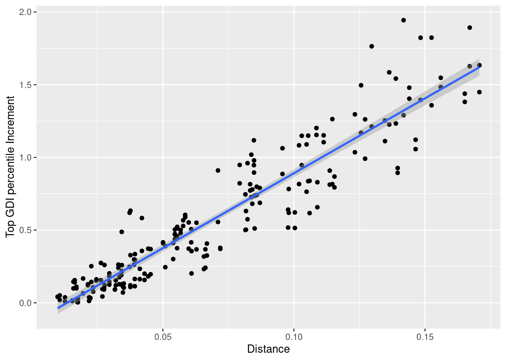
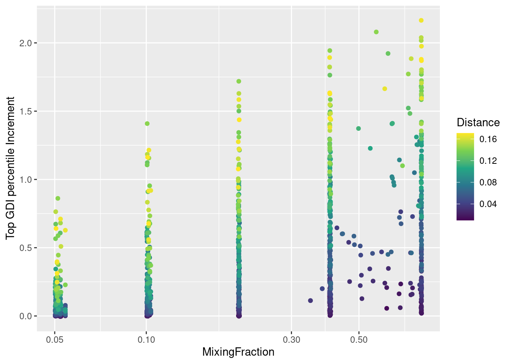
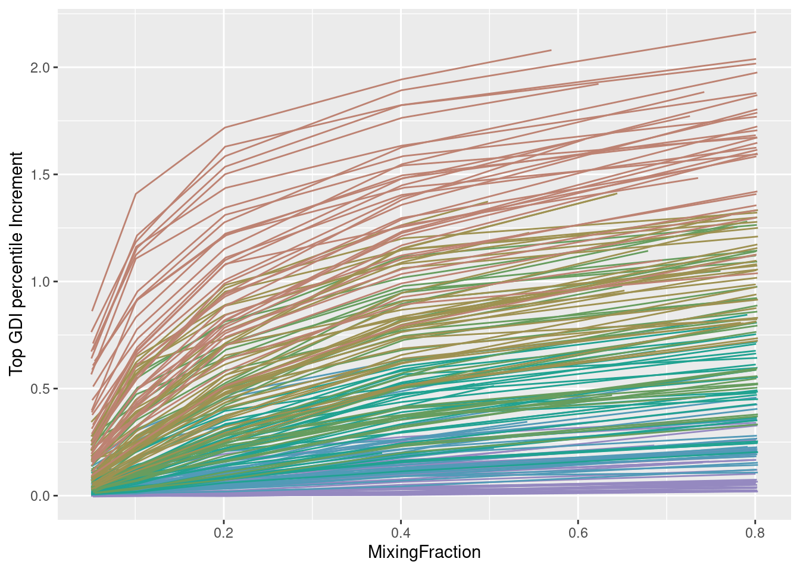

library(assertthat)
library(rlang)
library(scales)
library(ggplot2)
library(zeallot)
library(data.table)
library(parallelDist)
library(tidyr)
library(tidyverse)
#library(COTAN)
#options(parallelly.fork.enable = TRUE)
inDir <- file.path("Results")
#setLoggingLevel(2)
#setLoggingFile(file.path(inDir, "MixingClustersGDI_ForebrainDorsal.log"))
outDir <- file.path(inDir, "GDI_Sensitivity")
if (!file.exists(outDir)) {
dir.create(outDir)
}GDI Increment From Mixing
Preamble
Load calculated data for analysis
Recall cluster distance and add it to the results
zeroOneAvg <- readRDS(file.path(outDir, "allZeroOne.RDS"))
distZeroOne <- as.matrix(parDist(t(zeroOneAvg), method = "hellinger", diag = TRUE, upper = TRUE))^2
distZeroOneLong <- rownames_to_column(as.data.frame(distZeroOne), var = "MainCluster")
distZeroOneLong <-pivot_longer(distZeroOneLong,
cols = !MainCluster,
names_to = "OtherCluster",
values_to = "Distance")
distZeroOneLong <- as.data.frame(distZeroOneLong[distZeroOneLong[["Distance"]] != 0.0, ])
assert_that(identical(distZeroOneLong[, 1:2], resMix20[, 1:2]))[1] TRUEperm <- order(distZeroOneLong[["Distance"]])# Scatter plot of the effective increment at 40% mixing [Y]
# against estimated distance [X]
distDF <- cbind(distZeroOneLong[, "Distance", drop = FALSE],
sqrt(distZeroOneLong[, "Distance", drop = FALSE]))
colnames(distDF) <- c("Distance", "DistanceSqrt")
D2IPlot <- ggplot(cbind(resMix40, distDF),
aes(x=Distance, y=GDIIncrement)) +
geom_point() +
geom_smooth(method=lm, formula = y ~ x)+
ylab("Top GDI percentile Increment")
# + xlim(0, 1.5) + ylim(0, 1.5) + coord_fixed()
plot(D2IPlot)
Merge all data and plot it using the distance as discriminant
allRes <- rbind(resMix05[perm, ], resMix10[perm, ], resMix20[perm, ], resMix40[perm, ], resMix80[perm, ])
allRes <- cbind(allRes, "Distance" = rep(distZeroOneLong[["Distance"]][perm], 5))
rownames(allRes) <- NULL
allRes <- cbind(allRes, "ClusterPair" = rep.int(c(1:210),5))
allResWithBase <- cbind(resMix00[perm, ], "Distance" = distZeroOneLong[["Distance"]][perm])
rownames(allResWithBase) <- NULL
allResWithBase <- cbind(allResWithBase, "ClusterPair" = c(1:210))
allResWithBase <- rbind(allResWithBase, allRes)
assert_that(identical(allRes[, 4], allResWithBase[211:1260, 4]))[1] TRUEdim(allRes)[1] 1050 7IScPlot <- ggplot(allRes, aes(x=MixingFraction, y=GDIIncrement, color=Distance,)) +
geom_point() +
scale_color_continuous(type = "viridis") +
scale_x_log10()+
ylab("Top GDI percentile Increment")
plot(IScPlot)
GScPlot <- ggplot(allResWithBase, aes(x=MixingFraction, y=GDI, color=Distance,)) +
geom_point() +
scale_color_continuous(type = "viridis")+
ylab("Top GDI percentile")
plot(GScPlot)reOrder <- function(df, numBlocks) {
blockLength <- nrow(df) / numBlocks
permut <- rep(1:blockLength, each = numBlocks) +
rep(seq(0, nrow(df) - 1, by = blockLength), times = numBlocks)
return(df[permut, ])
}
allRes2 <- reOrder(allRes, 5)
allResWithBase2 <- reOrder(allResWithBase, 6)rng <- c(1,210)
#rng <- c(1,42)
#rng <- c(43,84)
#rng <- c(85,126)
#rng <- c(127,168)
#rng <- c(169,210)
ILinesPLot <- ggplot(allRes2[allRes2[["ClusterPair"]] %between% rng, ],
aes(x = MixingFraction, y = GDIIncrement,
color = (ClusterPair - 1) %/% 35 + 0.5)) +
geom_path(aes(group = ClusterPair)) +
theme(legend.position = "none") +
#scale_x_log10() +
scale_colour_stepsn(colours = hcl.colors(6, palette = "Dark 2")[6:1])+
ylab("Top GDI percentile Increment")
plot(ILinesPLot)
GLinesPLot <- ggplot(allResWithBase2[allResWithBase2[["ClusterPair"]] %between% rng, ],
aes(x = MixingFraction, y = GDI,
color = (ClusterPair - 1) %/% 35 + 0.5)) +
geom_path(aes(group = ClusterPair)) +
theme(legend.position = "none") +
#scale_x_log10() +
scale_colour_stepsn(colours = hcl.colors(6, palette = "Dark 2")[6:1]) +
ylab("Top GDI percentile")
# geom_line(data = data.frame(cbind(MixingFraction = c(0,0.8), GDI = c(1.4,1.4))),
# aes(x = MixingFraction, y = GDI))
plot(GLinesPLot)mg <- function(mixings) {
res <- mixings
res[res !=0 ] <- ceiling(log2(round(res[res !=0 ] * 40)))
return(res)
}
rng <- c(1,35)
#rng <- c(43,84)
#rng <- c(85,126)
#rng <- c(127,168)
#rng <- c(169,210)
allRes$Group <- factor((allRes$ClusterPair - 1) %/% 35 + 1)
levels(allRes$Group) <- paste0("Distance bin ",c(1:6))
allRes$discreteMixing <- factor(mg(allRes$MixingFraction))
levels(allRes$discreteMixing) <- c("5%","10%","20%","40%","80%")
IBoxPlot <- ggplot(allRes, aes(x=discreteMixing,
y=GDIIncrement,
fill=Group,
group = discreteMixing)) +
geom_boxplot()+
geom_jitter(width=0.25, alpha=0.5) +
scale_colour_stepsn(colours = hcl.colors(6, palette = "Dark 2")[6:1]) +
facet_wrap(. ~ Group, ncol = 3)+
theme(legend.position = "none") +
ylab("Top GDI percentile Increment")
plot(IBoxPlot)
allResWithBase$Group <- factor((allResWithBase$ClusterPair - 1) %/% 35 + 1)
levels(allResWithBase$Group) <- paste0("Distance bin ",c(1:6))
allResWithBase$discreteMixing <- factor(mg(allResWithBase$MixingFraction))
levels(allResWithBase$discreteMixing) <- c("0%","5%","10%","20%","40%","80%")
GBoxPlot <- ggplot(allResWithBase,
aes(x=discreteMixing, y=GDI, fill=Group,
group = discreteMixing))+
geom_boxplot() +
geom_jitter(width=0.25, alpha=0.5) +
scale_colour_stepsn(colours = hcl.colors(6, palette = "Dark 2")[6:1]) +
facet_wrap(. ~ Group, ncol = 3)+
theme(legend.position = "none") +
ylab("Top GDI percentile")
plot(GBoxPlot)Load calculated data about multi clusters cases for analysis
Compare estimated vs real GDI increment
# Scatter plot of the effective increment [Y] against estimated increment [X]
pg <- ggplot(resMix20_2, aes(x=PredictedGDIIncrement, y=GDIIncrement)) +
geom_point() +
geom_smooth(method=lm, formula = y ~ x + 0) +
coord_fixed() +
xlim(0, 1.5) + ylim(0, 1.5)+
ylab("Top GDI percentile Increment")
#scale_x_log10() + scale_y_log10()
plot(pg)
The plot shows that having the 20% extraneous cells in the mixture coming from multiple clusters does not affect significantly the sensitivity of the GDI to score cluster uniformity.
sessionInfo()R version 4.3.2 (2023-10-31)
Platform: x86_64-pc-linux-gnu (64-bit)
Running under: Ubuntu 20.04.6 LTS
Matrix products: default
BLAS: /usr/lib/x86_64-linux-gnu/openblas-pthread/libblas.so.3
LAPACK: /usr/lib/x86_64-linux-gnu/openblas-pthread/liblapack.so.3; LAPACK version 3.9.0
locale:
[1] LC_CTYPE=C.UTF-8 LC_NUMERIC=C LC_TIME=C.UTF-8
[4] LC_COLLATE=C.UTF-8 LC_MONETARY=C.UTF-8 LC_MESSAGES=C.UTF-8
[7] LC_PAPER=C.UTF-8 LC_NAME=C LC_ADDRESS=C
[10] LC_TELEPHONE=C LC_MEASUREMENT=C.UTF-8 LC_IDENTIFICATION=C
time zone: Europe/Rome
tzcode source: system (glibc)
attached base packages:
[1] stats graphics grDevices utils datasets methods base
other attached packages:
[1] lubridate_1.9.2 forcats_1.0.0 stringr_1.5.0 dplyr_1.1.2
[5] purrr_1.0.1 readr_2.1.4 tibble_3.2.1 tidyverse_2.0.0
[9] tidyr_1.3.0 parallelDist_0.2.6 data.table_1.15.0 zeallot_0.1.0
[13] ggplot2_3.5.0 scales_1.3.0 rlang_1.1.1 assertthat_0.2.1
loaded via a namespace (and not attached):
[1] utf8_1.2.3 generics_0.1.3 lattice_0.22-5 stringi_1.8.1
[5] hms_1.1.3 digest_0.6.33 magrittr_2.0.3 evaluate_0.21
[9] grid_4.3.2 timechange_0.3.0 fastmap_1.1.1 Matrix_1.6-3
[13] jsonlite_1.8.7 mgcv_1.9-1 fansi_1.0.4 viridisLite_0.4.2
[17] cli_3.6.1 munsell_0.5.0 splines_4.3.2 withr_3.0.0
[21] yaml_2.3.7 tools_4.3.2 tzdb_0.4.0 colorspace_2.1-0
[25] vctrs_0.6.3 R6_2.5.1 lifecycle_1.0.3 htmlwidgets_1.6.2
[29] pkgconfig_2.0.3 RcppParallel_5.1.7 pillar_1.9.0 gtable_0.3.3
[33] glue_1.7.0 Rcpp_1.0.11 xfun_0.39 tidyselect_1.2.0
[37] rstudioapi_0.15.0 knitr_1.43 farver_2.1.1 htmltools_0.5.8
[41] nlme_3.1-163 labeling_0.4.2 rmarkdown_2.24 compiler_4.3.2